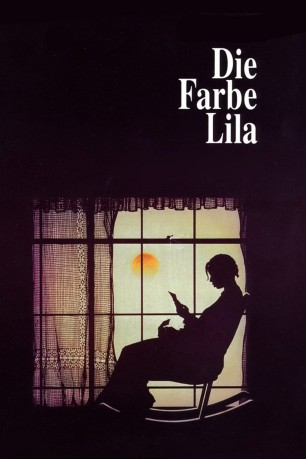
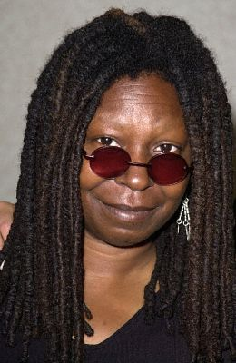
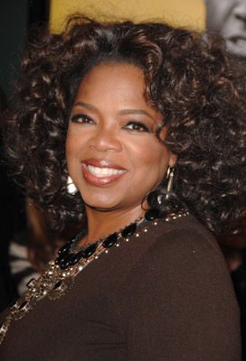
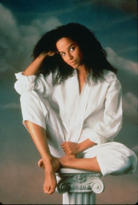

#484 Die Farbe Lila
Alternativ: The Color Purple
Auszeichnungen: für 11 Oscars nominiert 1 GoldenGlobes gewonnen
 
 IMDB-Wertung: 7.8 / 10
IMDB-Wertung: 7.8 / 10  Metascore: 78
Metascore: 78 
Anfang des 20. Jahrhunderts: Die junge Celie wird von ihrem Vater vergewaltigt und geschwängert. Ihre Kinder werden verkauft und sie muss den herrischen Witwer Albert, den sie nur "Mister" nennen darf, heiraten und auf dessen Kinder aufpassen. Celies einziger Rückhalt ist ihre Schwester. Als diese von Albert herausgeschmissen wird, verspricht sie Celie, ihr immer Briefe zu schreiben. Die Jahre vergehen, doch nie kommt ein Brief ihrer geliebten Schwester an. Celie ahnt nicht, dass Albert ihr diese schon seit Jahren vorenthält und sie versteckt. Eines Tages tritt die Bluessängerin Shug in ihr Leben. Diese hilft Celie, ihr Leben selbst in die Hand zu nehmen, um sich gegen ihren Mann zu wehren.
Jahr: 1985
Dauer: 154 Minuten
FSK: 12
Land: USA Studio: Warner Home VideoTonspuren: DD2.0 - ,
Untertitel:
Auflösung: 1080p (1920x1080) Größe: 12288 MB
Genre: Drama
Regisseur:  Steven Spielberg
Steven Spielberg
Drehbuch: Menno Meyjes, Alice Walker
Soundtrack: Quincy Jones
Darsteller:
 Danny Glover als Albert
Danny Glover als Albert-  Whoopi Goldberg als Celie Johnson
- Margaret Avery als Shug Avery
-  Oprah Winfrey als Sofia
- Willard E. Pugh als Harpo Johnson
- Akosua Busia als Nettie Harris
- Adolph Caesar als Old Mister Johnson
-  Rae Dawn Chong als Squeak
 Dana Ivey als Miss Millie
Dana Ivey als Miss Millie- Bennet Guillory als Grady
- Susan Beaubian als Corrine
 Laurence Fishburne als Swain
Laurence Fishburne als Swain Leon Rippy als Store Clerk
Leon Rippy als Store Clerk- John R. Hart als Mailman
- Maurice Moore als Child #1
- Jeris Poindexter als Jook Joint Patron
- Hawthorne James als Jook Joint Patron
- Greg Phillinganes als Jook Joint Musician
- Clarence Avant als African Musician
- Aniijia Rae Schockley als African Musician
- Gayle King als Church-goer , uncredited
- Desreta Jackson als Young Celie Harris
- Leonard Jackson als Pa Harris
- John Patton Jr. als Preacher
- Carl Anderson als Reverend Samuel
- James Tillis als Buster
- Phillip Strong als Mayor
- Peto Kinsaka als Adam
- Lelo Masamba als Olivia
- Margaret Freeman als Odessa
- Howard Starr als Young Harpo
- Daphaine Oliver als Young Olivia
- Jadili Johnson als Young Adam
- Lillian Njoki Distefano als Young Tashi
- Donna Buie als Daisy
- David Thomas als Road Gang Leader
- Carrie Murray als Loretta
- Juliet Poe als Church Sister
- Katie Simon als Church Sister
- Ethel Taylor als Church Sister
- Marcus Covington als Boy
- Marcus Liles als Boo
- April Myers als Emma
- Lechanda Latharp als Child #2
- Drew Bundini Brown als Jook Joint Patron
- Arnold F. Turner als Jook Joint Patron
- Sonny Terry als Jook Joint Musician
- Roy Gaines als Jook Joint Musician
- Paulinho Da Costa als African Musician
- Nana Yaw Asiedu als African Musician
Datei: X:\1985\Farbe Lila, Die (1985, FSK12, 1920x1080).mkv seit 02.03.2015
Festplatte: HD 1980-1986
 Es gibt insgesamt 43 Filme in der Gruppe '1985'
Es gibt insgesamt 43 Filme in der Gruppe '1985'